ライドの途中で立ち寄るカフェやお店と､セキサイがお世話になっている自転車屋さんをご紹介します｡
白川町佐見の､メニューの多さに頭がフリーズするカフェレストラン
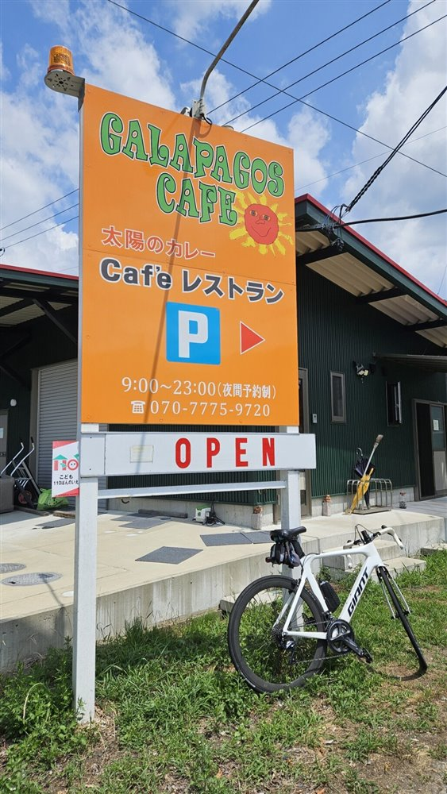
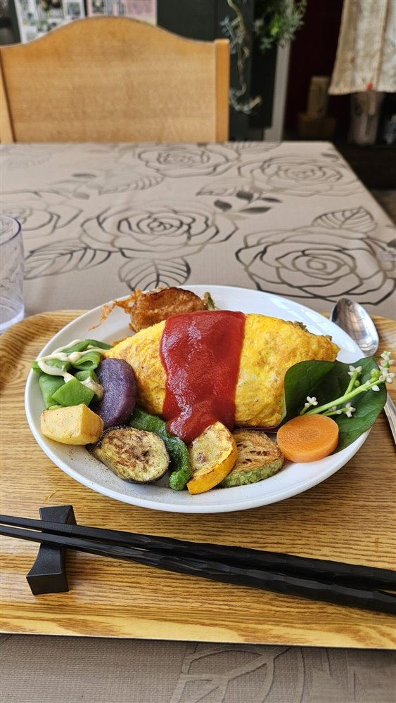
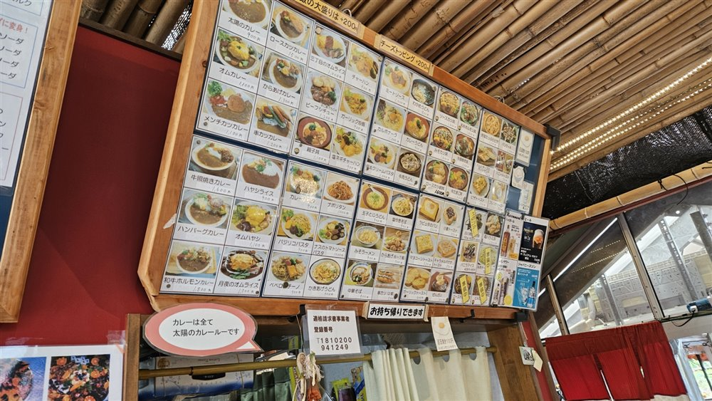
白川グランフォンドの試走で､お昼ごろに立ち寄りました｡いつも壁いっぱいのメニューで頭がフリーズするほど､品数が豊富なお店です｡定番は太陽のカレーですが､この日はオムライスを｡野菜とチキンがたくさんで､彩りがきれいなのにご飯にもしっかり味がついています｡
食後にシソシロップと冷やしたきゅうりを出してもらい､扇風機を強で当ててもらって生き返りました｡白川の人はみんなやさしい､と実感するお店です｡白川一周・シライチのコース上にあるので､補給にもぴったりです｡
白川町観光協会おすすめ､センスのよさがひと目でわかるカフェ
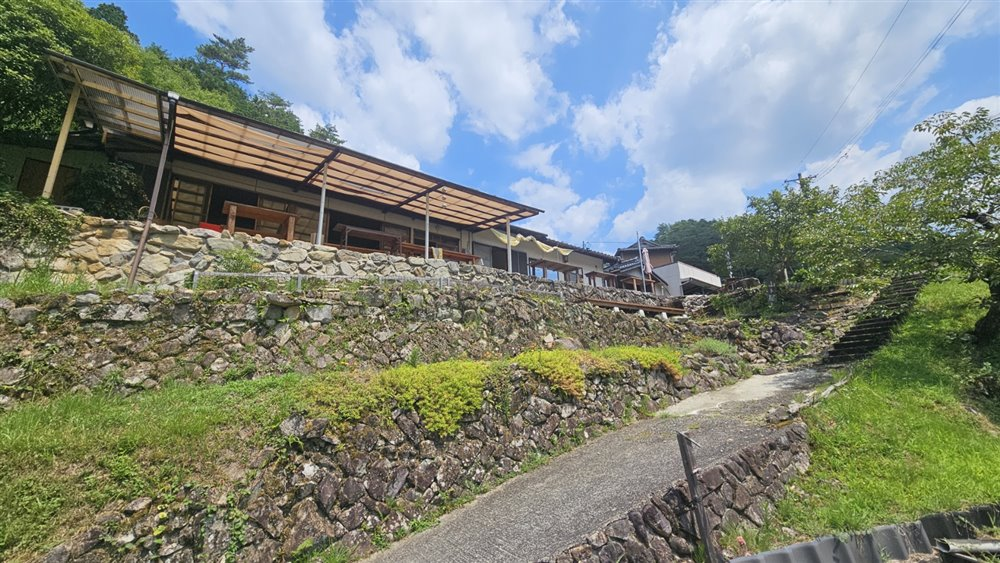
白川町観光協会さんがおすすめしてくれているカフェです｡桜峠を下った麓にあり､ぜったいセンスのいいお店だと一目でわかります｡
今年の白川グランフォンドは､白川町観光協会さん､白川町､そして山ト風トさんの協力のもとで開催されます｡
大正ロマンの建物で､サイクリストを朝から迎えてくれるカフェ


朝8時30分から営業しているので､朝練やモーニングライドにぴったりです｡コーヒーを頼むとモーニングがついてくるお値打ちなセットや､午後のアフタヌーンティー､夏のふわふわかき氷が人気です｡
建物は大正村のような風情があり､店員さんがとにかくやさしいお店です｡人気店なので､満席で入れないこともあります｡セキサイでは､冬のカフェライドの目的地にもなっています｡
粥川の里の奥にある､ライド中のごちそうカフェ


美並の粥川の里､星宮神社の近くにあるカフェです｡訪れたのはお昼前の11時でしたが､店内はとても賑わっていました｡
モーニングの時間をすぎていたので､ランチのナポリタンをいただきました｡この先には難所の八王子峠が待っているので､ここでしっかり補給していきます｡コガイチなど､高賀山周辺のコースにおすすめです｡
長良川沿いの古民家で､手作りパンとコーヒーを
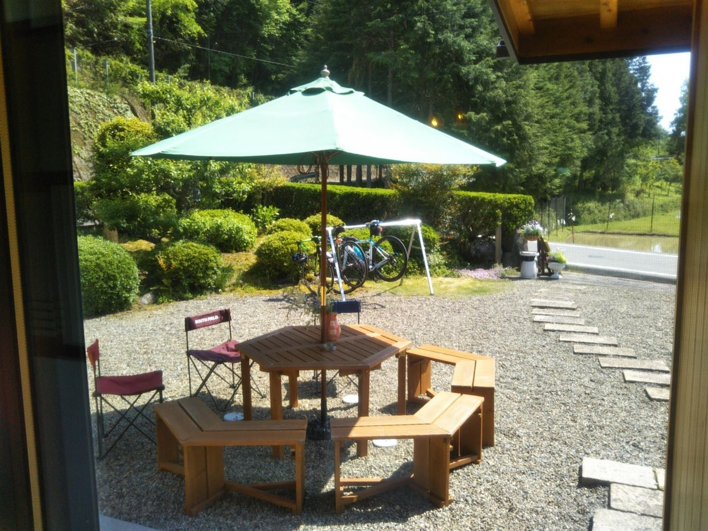
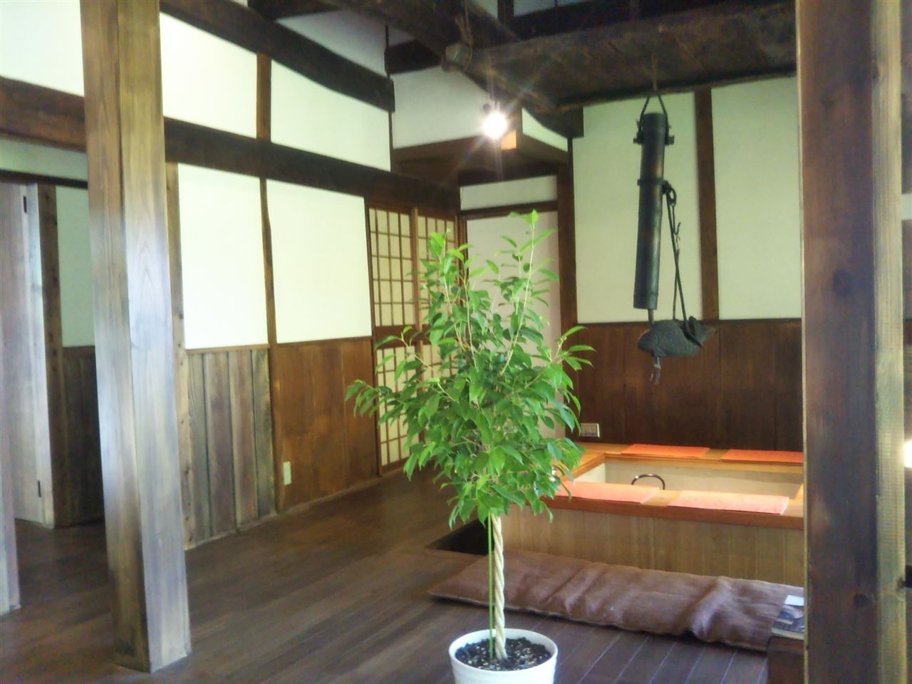
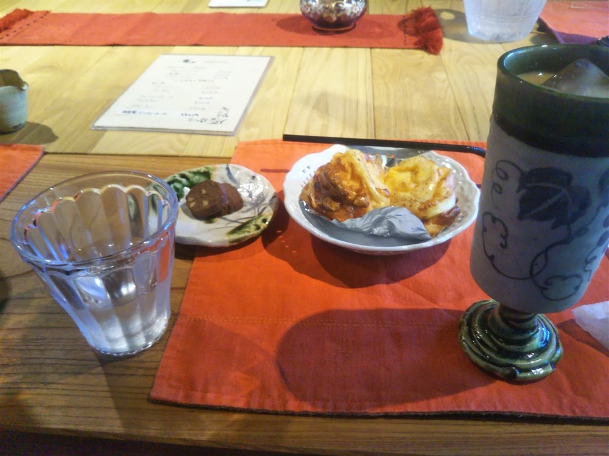
美並温泉の手前にある､サイクリストでいつも賑わっているカフェです｡店内の調度品がとてもセンスよく､ゆっくり話がはずみます｡
おすすめはチーズケーキですが､手作りパンも絶品です｡コーヒーに好きなパンを組み合わせて､郡上方面へのライドの休憩にどうぞ｡セキサイでは､郡上八幡へ行く鉄板コースのティータイムにもなっています｡
川辺町のパークサイドテラスで､景色を見ながらモーニング


川辺町の高台にある､景色のいいおしゃれなカフェです｡テラス席は透明なガラス板が風をさえぎってくれるので､肌寒い季節でも気持ちよく過ごせます｡
モーニングのトーストについてくる､果肉ゴロゴロのジャムが絶品でした｡山之上の果樹園を抜けて向かうのがおすすめのルートです｡
藤橋の山あいにある､トトロハウスのような隠れ家カフェ
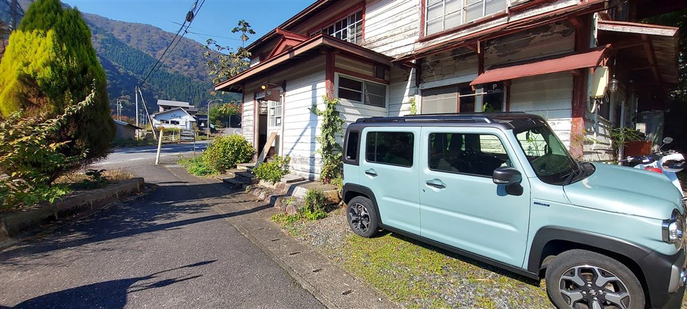
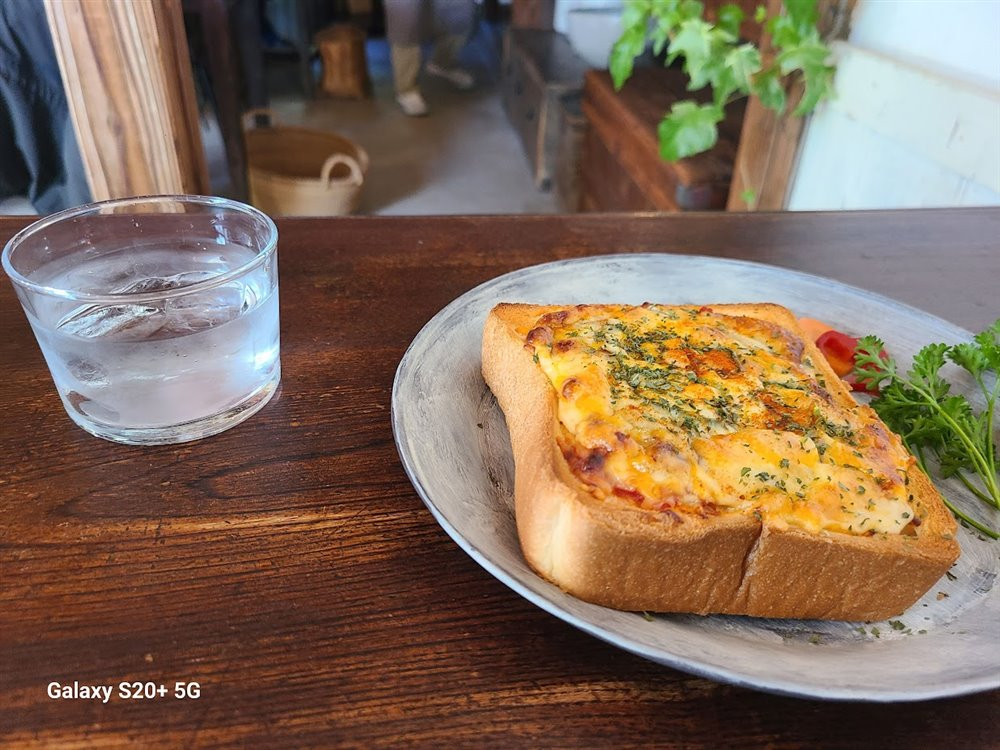
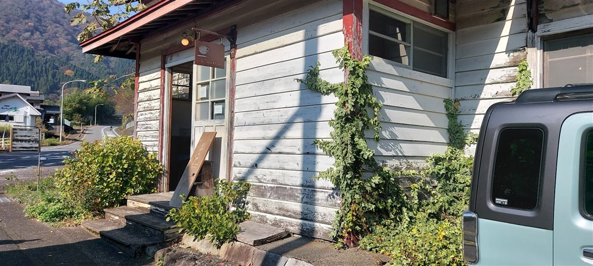
根尾から徳山ダム方面へ走るライドで立ち寄ったカフェです｡藤橋の道の駅に寄ろうと思っていたところ､トトロハウスのようなおしゃれな建物が目に入り､こちらにしました｡
いただいたのはチーズがとろけるトースト｡室内はほどよいアンティーク感で､ゆっくり過ごせます｡撮影の許可もいただいています｡
神渕のカフェで､ちょっと変わった｢かぶちぃーの｣を
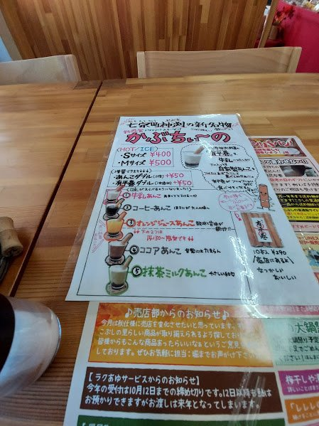
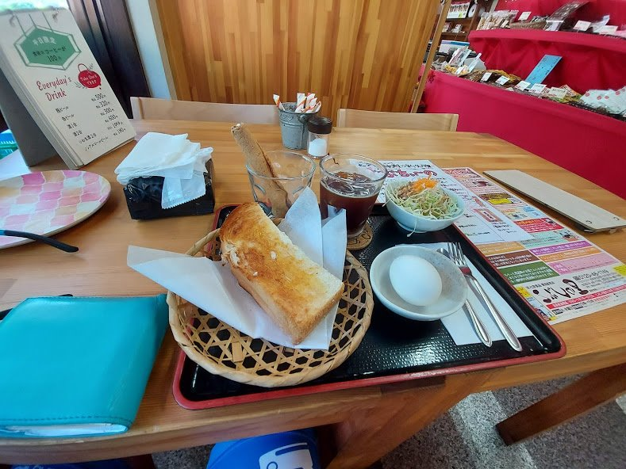
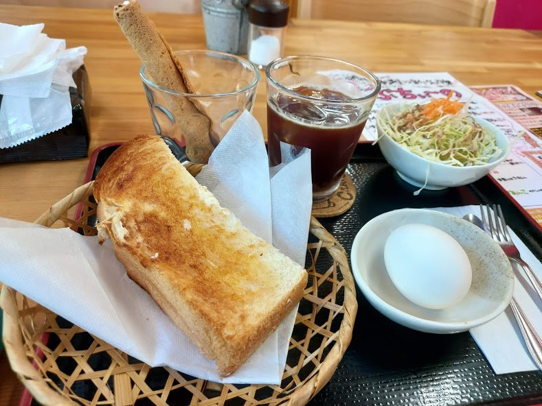
神渕ライドで立ち寄る､セキサイおなじみのお店です｡名物は｢かぶちぃーの｣｡カプチーノにかけた名前でしょうか､ドリンクの中にありへい巻が突っ込んであるという､ちょっと特殊な飲み物です｡
ミルクバージョンがめちゃくちゃおいしく､この日はコーヒーバージョンをいただきました｡トーストのセットも人気です｡
根尾谷の麓にある､日替わりランチ500円の食堂
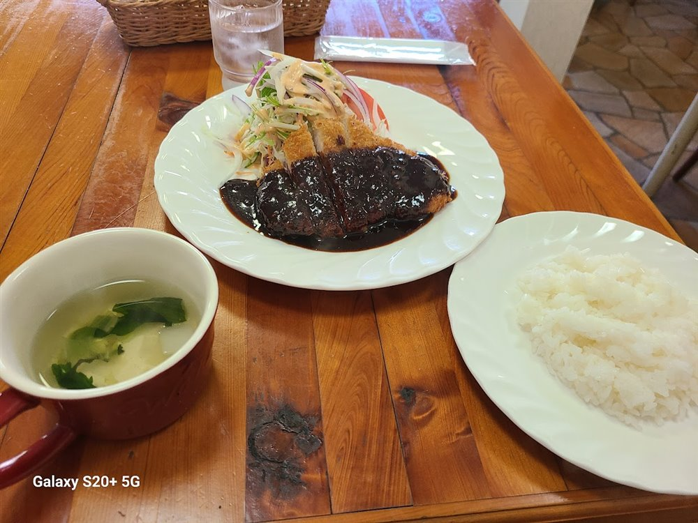
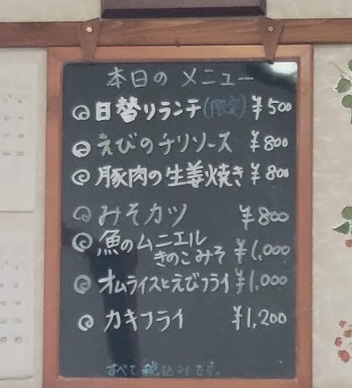
根尾谷の麓にある食堂で､ずっと気になっていたお店です｡11時に着いたときはすでに満席でした｡日替わりランチがなんと500円｡
この日は前から決めていた味噌カツを｡スープ､味噌カツ､ご飯に季節のデザートがついて､最後にコーヒーまで出てきます｡お得すぎるおすすめの定食屋さんです｡
ケイちゃん定食を食べに､バイカーも自転車も行列


飛騨萩原にある､ケイちゃん（鶏ちゃん）の人気店です｡ケイちゃんは鶏肉を野菜と一緒に味付けして焼く､岐阜の飛騨･郡上地方の郷土料理です｡
10時すぎに着くと､お店の前にはバイクがずらりと並び､すでに長蛇の列｡整理券をもらって40分ほど待ちました｡小鉢がずらりと並んだショーケースも気になるお店です｡
金山の川沿いで､750円の鉄板とり焼き定食


金山町の川沿い､今井木材さんの敷地にあるお店です｡2025年1月のオープン直後はお客さんが自分ひとりだったのが､今では11時半にはめちゃくちゃ混んでいる大人気店になりました｡
とり焼き定食は750円で大盛無料｡おすすめは甘ダレで､鉄板がジュージューと音を立て､皮はパリパリでジューシーです｡第3日曜が定休日なので､お出かけの際はご注意ください｡
郡上白鳥の道の駅にある､行列のできるラーメン屋さん
郡上白鳥の道の駅にあるラーメン屋さんです｡名物は｢郡上豚骨｣｡観光地のラーメンは当たり外れがありますが､ここのラーメンは本当においしいと評判です｡
11時台でも外に行列ができるほどの人気なので､早めの到着がおすすめです｡
白川町のパン屋さん｡パンを買うとコーヒーをもたせてくれます
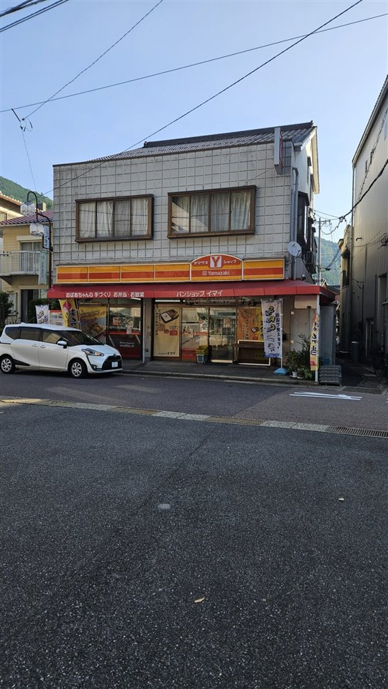
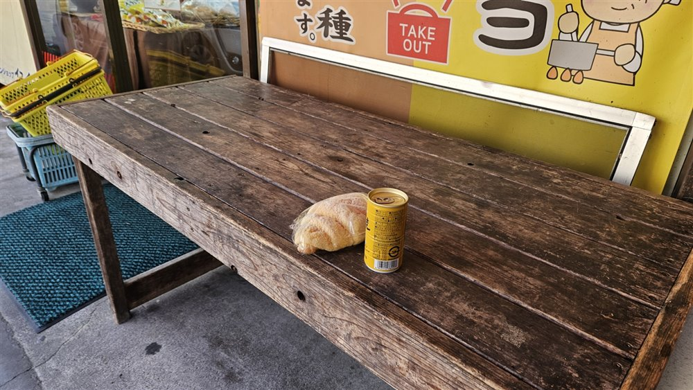
白川一周・シライチのコース序盤で立ち寄るパン屋さんです｡朝にパンを買ったら､｢コーヒー持ってって!!｣と言っていただき､思わぬモーニングになりました｡
ベンチなのかテーブルなのか微妙な高さの木のテーブルでいただくと､朝から気持ちがほわほわします｡この先すぐ400mの登りが待っているので､ここでしっかり補給しておきましょう｡
白川町の茶畑のそばにある､冷たいお茶とケーキの直売所
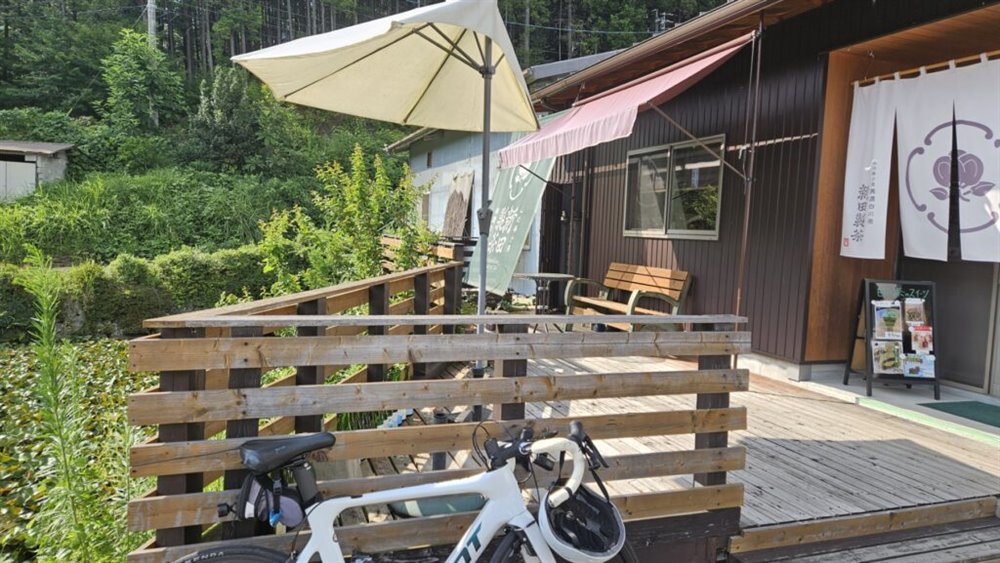
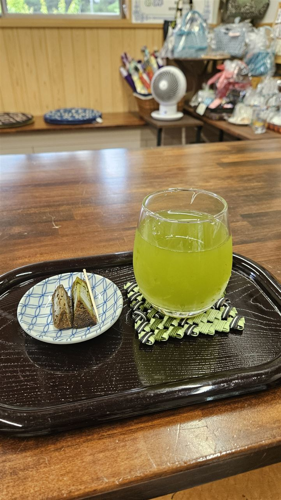
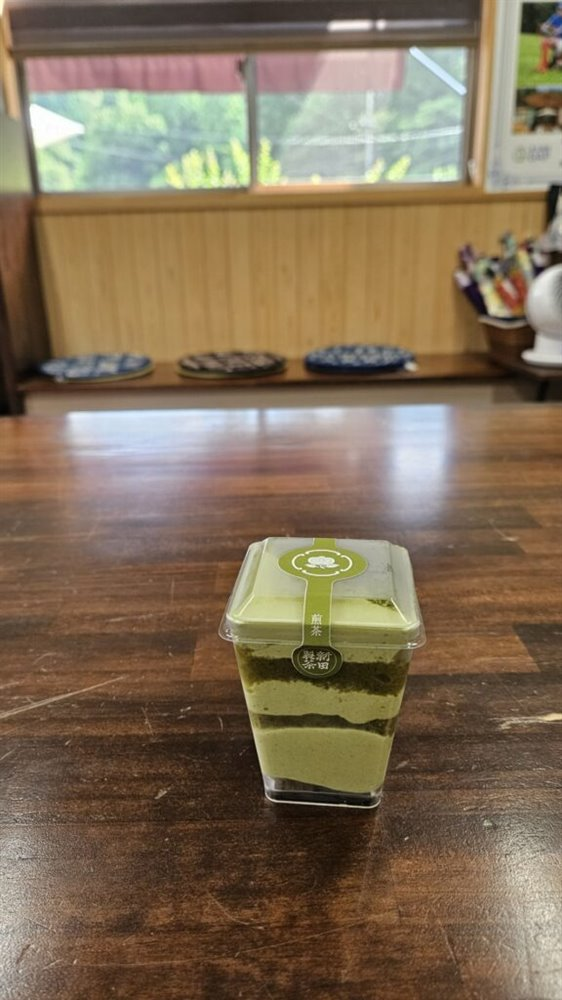
白川町観光協会さんおすすめのお店です｡ケーキを買うと､ギンギンに冷えたお茶と一緒に出してくれました｡お茶は二番茶で､青みの強い緑色と､風味豊かですっきりとした味わいが特徴です｡
白川は寒暖差が大きく､お茶づくりに向いた土地です｡以前にはほうじ茶プリンや緑茶アイスをいただきながら､テラスでカフェタイムを楽しみました｡お店の方がやさしく､ライドの最後に立ち寄るエイドとして最高です｡
日吉高原の結節点にある､通称ざわしょー

日吉高原のちょうど真ん中にあるお店で､東濃や中山道方面のライドで立ち寄る､サイクリストの休憩スポットです｡通称｢ざわしょー｣｡ジュースを買って一休みするのが定番です｡
店の前はいつも賑やかで､みんなの笑い声が高原に響きます｡営業していない日もあるので､立ち寄るときは余裕をもってどうぞ｡
佐見の入口にある､パンを買える昔ながらの名店
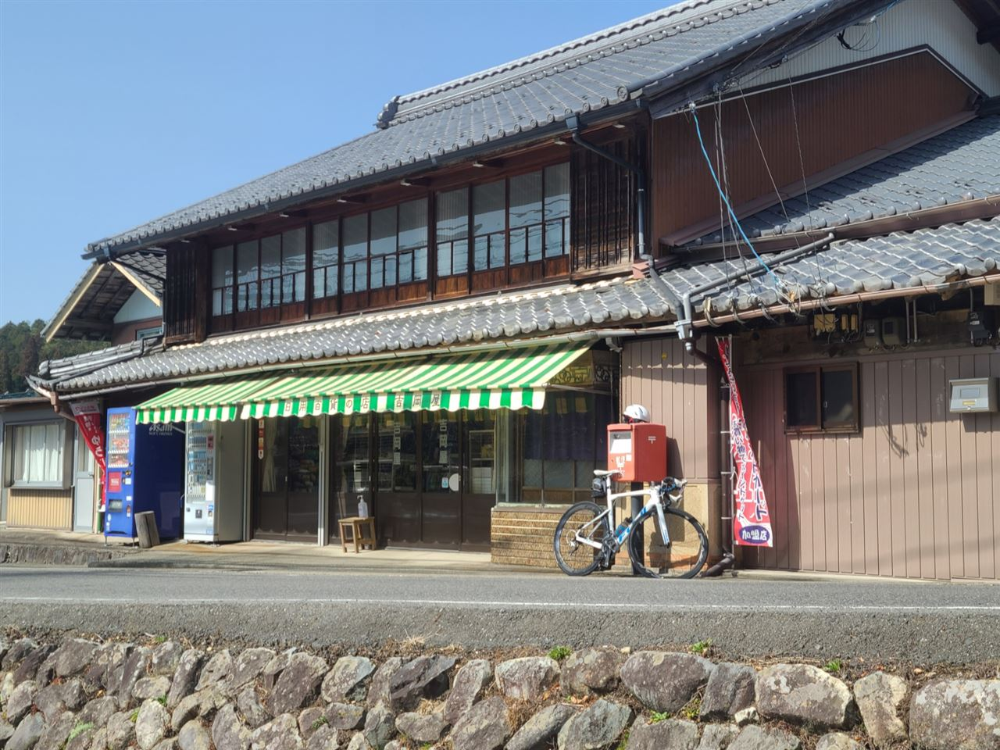
ガラパゴスカフェへ向かう途中､下佐見にある名店です｡自転車を停めて休憩していると､お店のおじさんが｢花粉すごくない?｣と話しかけてくれました｡
ここで買ったパンは､この先の佐見の登りへ向けた大事な補給食です｡
神渕の峠の頂上にある和菓子屋さん
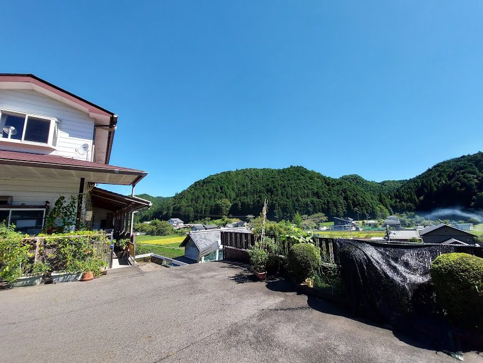
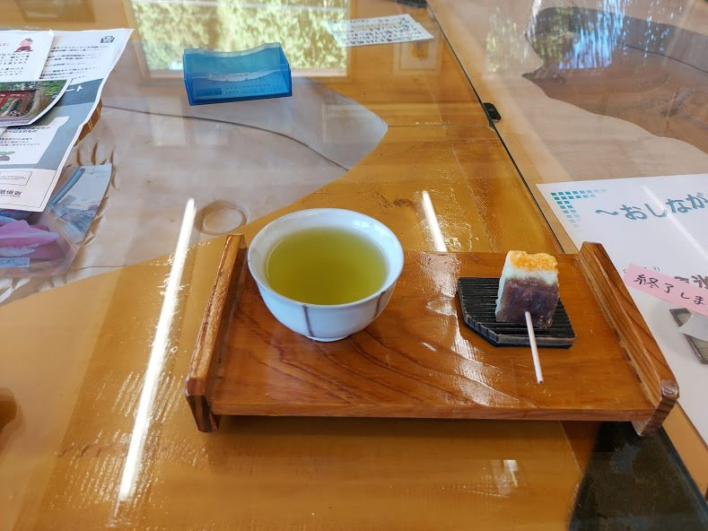
神渕ライドで立ち寄る､峠の頂上にある和菓子屋さんで､見晴らしがとてもよいお店です｡お店に入ると､ちょっとしたお菓子とお茶をいただけます｡
おみやげに和菓子をたくさん買ったら､おまけもしてくれました｡袋坂峠方面へ向かうライドの補給にもぴったりです｡
東濃ライドの途中にある､焼きたてパンのお店


東濃の久須見交差点の近くにあるパン屋さんで､東濃デスライドの途中で立ち寄るお店です｡広い店内にパンがずらりと並びます｡
おすすめはスティック状のパン｡背中のポケットに差しやすく､走りながら食べられる､サイクリストにうれしいパンです｡
関市百年公園南口にある､やさしい店主さんの自転車屋


関市の百年公園南口にあるスポーツバイクのお店です｡セキサイのメンバーも､いつもお世話になっている行きつけのお店です｡
いちばんの特長は､やさしい店主さんです｡ネットで買ったパーツなど､持ち込みのパーツでも取り付けてくれます｡初心者でも相談しやすく､ロードバイクのレンタルもあるので､自転車選びに迷っているときにも心強い味方です｡
年に一度のオーバーホールや､ライド前日の急なトラブルにも対応してもらっています｡
※紹介は､トマト工業ブログ(2016年〜2026年)の記事をもとにしています｡営業時間や定休日は変わることがあるので､お出かけの前にご確認ください｡